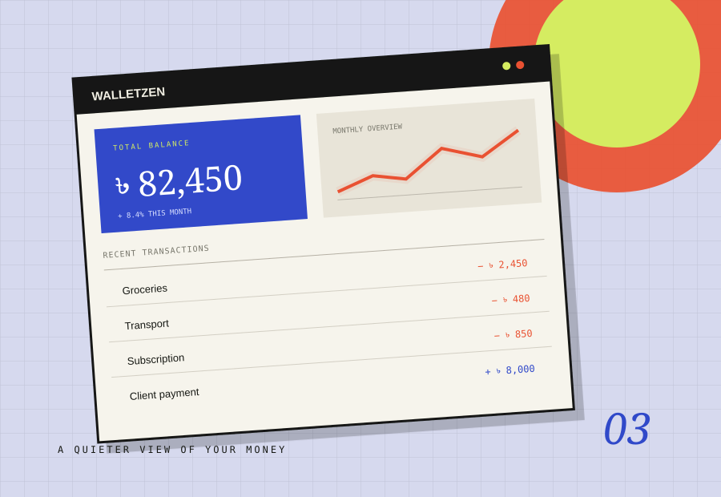

A CLEARER PICTURE OF EVERYDAY MONEY.
WalletZen
A personal finance tracker that brings accounts, transactions and monthly spending into one focused workspace.

THE STARTING POINT
Give the problem
a useful shape.
WalletZen is a personal finance tracker designed to make the everyday picture easier to read. Its interface brings the parts people return to most — accounts, recent transactions and monthly summaries — into one place.
The dashboard brings together account balances, quick actions, recent activity, monthly overview, income-versus-expense comparison and spending categories. The goal is to keep the routine of reviewing money clear rather than burying it beneath a complicated financial dashboard.
WHAT'S IN THE BUILD
- 01A dashboard with account and balance information.
- 02Recent transaction list and account management.
- 03Monthly overview with income-versus-expense context.
- 04Spending categories for a more readable breakdown.
THE DESIGN INTENT
Make a frequent, personal task feel calm and legible, especially on a small screen.